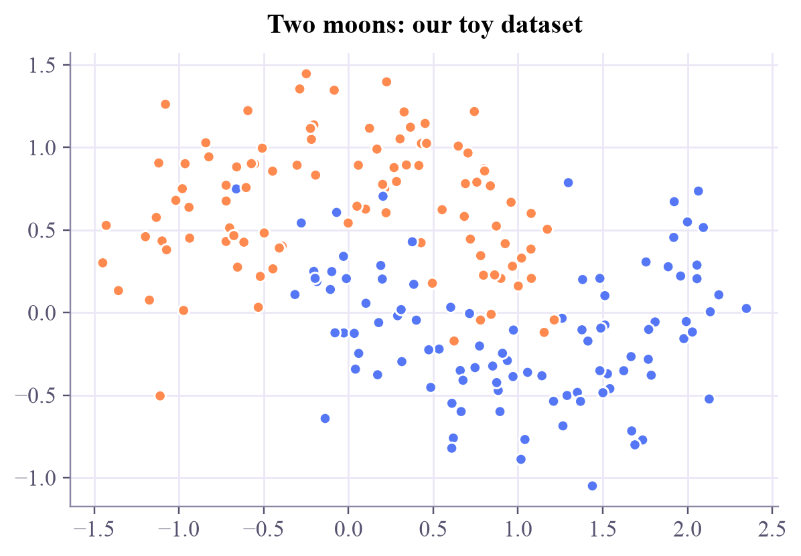
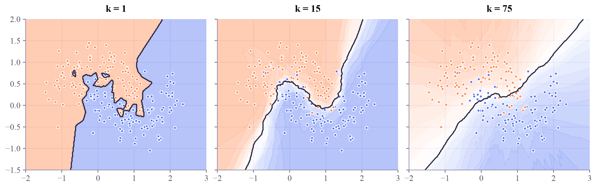

X: (200, 2) y: (200,) classes: [0 1]

The friendliest classifier there is: to label a new point, ask the k closest points you already know.

You move into a new street and wonder: is this a quiet part of town or a lively one? You don't need a theory. You knock on the five nearest doors and go with the majority.
Yesterday every flower became a point in feature space. Today's classifier works directly with distances between those points, and it works surprisingly well.
Given labeled training points and a new point that you want to classify, k-nearest neighbors (kNN) does three things:
There is no training step: kNN simply remembers the data. Its one knob is :
Listens only to the very nearest point. Follows every bump and every noisy point. The boundary is jagged.
Asks a crowd. Ignores single noisy points, but if is too large it blurs away real structure.
The decision boundary is the line where the vote flips from one class to the other. Coloring the whole plane by the prediction makes it visible.
kNN trusts distances. If one feature is in millimetres and another in kilometres, the millimetres dominate everything. That is why features are usually scaled to similar ranges first.
Drag the yellow star around. The lines show its nearest neighbors, and the dashed circle is the size of its neighborhood. Turn on the decision map to see the boundary, then change .
Set and switch on the decision map: notice the little islands around single points. Now slide up to 25. Then choose Add orange and drop a few orange points deep inside the blue region. Which cares about them, and which ignores them?
ml-w1d3.ipynb. To change the code and run it yourself, open the notebook in Google Colab (free, in your browser) or download it for your own Jupyter.import numpy as np
import matplotlib.pyplot as plt
from sklearn.datasets import make_moons
X, y = make_moons(n_samples=200, noise=0.25, random_state=0)
print("X:", X.shape, " y:", y.shape, " classes:", np.unique(y))
plt.scatter(X[:, 0], X[:, 1], c=np.where(y == 0, "#ff8a50", "#5577f5"), s=30)
plt.title("Two moons: our toy dataset")
plt.show()X: (200, 2) y: (200,) classes: [0 1]

Here is the whole algorithm. Read it line by line: distance, sort, vote.
def knn_predict(X_train, y_train, x_new, k=5):
distances = np.sqrt(((X_train - x_new) ** 2).sum(axis=1)) # Euclidean distance
nearest = np.argsort(distances)[:k] # indices of the k closest
votes = np.bincount(y_train[nearest], minlength=2) # count labels
return votes.argmax(), votes
x_new = np.array([0.5, 0.25])
for k in [1, 5, 25]:
label, votes = knn_predict(X, y, x_new, k)
print(f"k = {k:2d}: votes {votes} -> class {label}")k = 1: votes [1 0] -> class 0 k = 5: votes [2 3] -> class 1 k = 25: votes [14 11] -> class 0
The same point gets class 0, then 1, then 0 again as grows. Now let scikit-learn color the plane for three values of :
from sklearn.neighbors import KNeighborsClassifier
from matplotlib.colors import LinearSegmentedColormap
apricot_blue = LinearSegmentedColormap.from_list("apricot_blue", ["#ff8a50", "#ffffff", "#5577f5"])
xx, yy = np.meshgrid(np.linspace(-2, 3, 300), np.linspace(-1.5, 2, 220))
grid = np.c_[xx.ravel(), yy.ravel()]
fig, axes = plt.subplots(1, 3, figsize=(11, 3.4), sharey=True, layout="constrained")
for ax, k in zip(axes, [1, 15, 75]):
model = KNeighborsClassifier(n_neighbors=k).fit(X, y)
zz = model.predict_proba(grid)[:, 1].reshape(xx.shape)
ax.contourf(xx, yy, zz, levels=20, cmap=apricot_blue, alpha=0.45)
ax.contour(xx, yy, zz, levels=[0.5], colors="#2c2842", linewidths=1.5)
ax.scatter(X[:, 0], X[:, 1], c=np.where(y == 0, "#ff8a50", "#5577f5"), s=14)
ax.set_title(f"k = {k}")
plt.show()
The loop version classifies one point at a time. Write knn_torch, which classifies a whole batch of new points in three lines, then check that it agrees with scikit-learn.
torch.cdist(X_new, X_train) gives every distance at once: one row per new point..topk(k, largest=False) finds the smallest distances in each row (use its .indices).y_train[indices] gives the neighbors' labels, and .mode(dim=1).values the most common one per row.import torch
def knn_torch(X_train, y_train, X_new, k=5):
distances = None # TODO: torch.cdist(...), shape (n_new, n_train)
indices = None # TODO: the k smallest distances in each row: .topk(k, largest=False).indices
return None # TODO: the most common neighbor label in each row: y_train[indices].mode(dim=1).values
Xt, yt = torch.tensor(X, dtype=torch.float32), torch.tensor(y)
X_new = torch.tensor(grid[::97], dtype=torch.float32) # about 680 new points spread over the plane
pred = knn_torch(Xt, yt, X_new, k=15)
if pred is None:
print("knn_torch returns None so far: fill in the TODOs")
else:
sk = KNeighborsClassifier(n_neighbors=15).fit(X, y).predict(X_new.numpy())
print(f"agrees with scikit-learn on {(pred.numpy() == sk).mean():.1%} of {len(X_new)} points")Each step is one line. The shapes are: distances (n_new, n_train), indices (n_new, k), neighbor labels (n_new, k), prediction (n_new,).
def knn_torch(X_train, y_train, X_new, k=5):
distances = torch.cdist(X_new, X_train) # every new point to every training point
indices = distances.topk(k, largest=False).indices # the k nearest, per row
return y_train[indices].mode(dim=1).values # majority vote, per row
pred = knn_torch(Xt, yt, X_new, k=15)
sk = KNeighborsClassifier(n_neighbors=15).fit(X, y).predict(X_new.numpy())
print(f"agrees with scikit-learn on {(pred.numpy() == sk).mean():.1%} of {len(X_new)} points")
print("predicted classes for the first 10 new points:", pred[:10].tolist())agrees with scikit-learn on 100.0% of 681 points predicted classes for the first 10 new points: [0, 1, 1, 1, 1, 1, 1, 1, 1, 1]
A few points can disagree when two classes tie in the vote: scikit-learn and PyTorch break ties differently. With an odd and two classes there are no ties.
kNN is only as good as its idea of similarity, here straight-line distance. Quantum machine learning offers a new kind of similarity: how much two quantum states overlap. You'll meet it in week 4 (kernels), and build it from qubits in the Quantum ML tutorial.
ISLP section 2.2.3 shows kNN with and on one dataset, and why neither extreme is best. Mitchell's Machine Learning, chapter 8, calls this family "instance-based learning".
Next in Machine Learning: how to measure a model's accuracy honestly, with training, validation and test data.

Tap the button to save it. Short and steady wins.
Marked by mistake? Undo